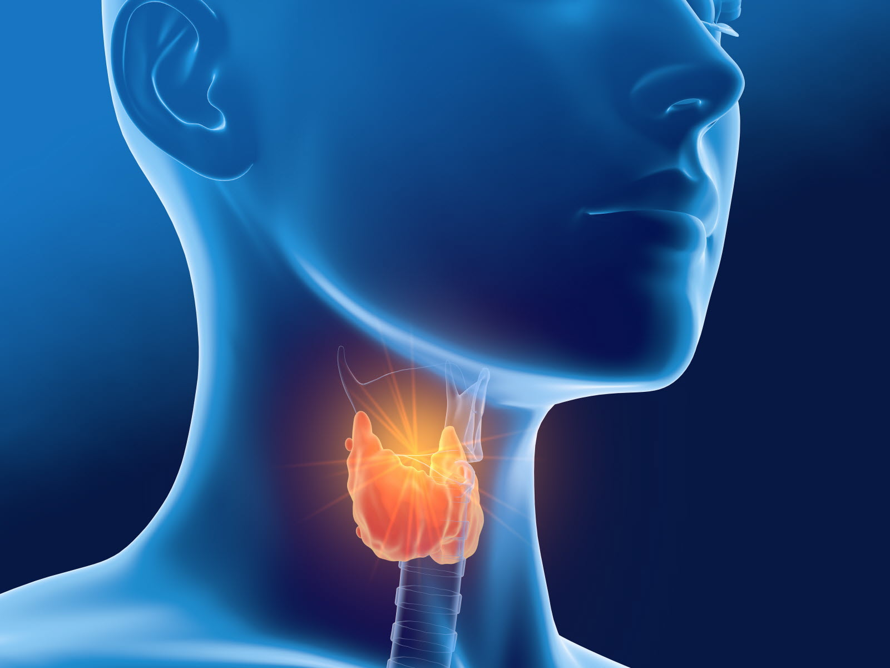

La thyroïde est une glande en forme de papillon située à la base du cou, devant la trachée.
Elle joue un rôle crucial dans la régulation du métabolisme en produisant des hormones thyroïdiennes,
principalement la thyroxine (T4) et la triiodothyronine (T3). Ces hormones influencent presque tous les organes du corps, régulant des fonctions telles que la température corporelle,
le rythme cardiaque et le métabolisme des graisses et des glucides.
L'hyperthyroïdie est une condition médicale où la glande thyroïde produit une quantité excessive d'hormones thyroïdiennes.
Cela peut accélérer le métabolisme du corps, entraînant divers symptômes. Voici quelques-uns des symptômes courants de l'hyperthyroïdie :
L'hypothyroïdie est une condition médicale où la glande thyroïde ne produit pas suffisamment d'hormones thyroïdiennes.
Cela peut ralentir le métabolisme du corps, entraînant divers symptômes. Voici quelques-uns des symptômes courants de l'hypothyroïdie :